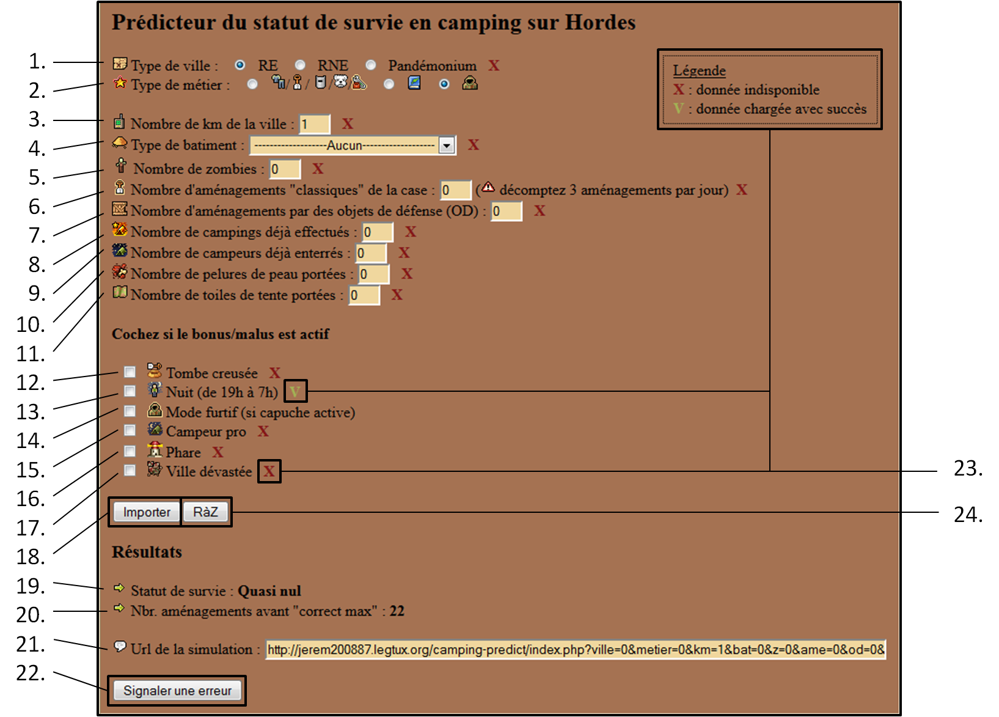
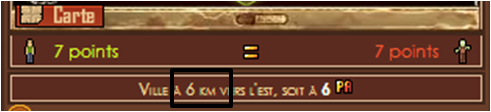

Page "Accueil"

1. Type de ville : région éloigné (RE), région non-éloignée (RNE) ou pandémonium.
Les villes en pandémonium ont un malus constant de camping par rapport aux RE et RNE.
2. Type de métier : habitant, fouineur, gardien, apprivoiseur et technicien
sont équivalents et ne bénéficient d'aucun bonus de camping.
Ermite permet de débloquer des chances de survies suppérieures à tous les autres métiers avec les statuts
"élevé" et "optimal".
Eclaireur permet de réduire le malus subit par la présence de zombies lorsqu'il est en mode furtif (voir
point 14).
3. Nombre de km de la ville : visible lorsque vous êtes dans l'outre monde en-dessous de la minimap
:

Cette distance permet d'apporter un bonus de camping. De manière générale, plus vous êtes éloignés de la
ville, plus ce bonus est
grand. Notez qu'il existe des palliers où ce bonus n'évolue pas.
4. Type de bâtiment : de manière générale, les bâtiments donnent un bonus de camping. Ils sont
sélectionnables sur camping predict
en fonction des distances auxquelles ils apparaissent. La liste complète des bâtiments n'apparaît donc jamais
dans le menu déroulant.
5. Nombre de zombies : les zombies présents sur la case de camping infligent un malus. Ce malus peut être
diminué si vous êtes éclaireur et
que le mode furtif est actif (voir point 14).
6. Nombre d'aménagements "classiques" : le nombre d'aménagements "classiques" correspond au nombre de
fois que vous effectuez l'action "Améliorer un peu le campement (bonus permanent faible, 1 PA)",
après avoir cliqué sur "Inspecter le secteur" qui se trouve à droite de la minimap lorsque vous vous trouvez
dans l'outre monde.
Il faut savoir qu'il est impossible d'effectuer d'autres aménagements lorsque leur total est égal ou suppérieur
à 10 (voir point 7 pour
dépasser les 10 aménagements) et que ce bonus est commun à tous les citoyens se trouvant sur la case. Il est
également important de penser à décompter
3 aménagements par attaque de la horde (phénomène qui se produit tous les jours jusqu'à ce que la case soit
retombée à zéro aménagement).
Pour ceux qui comprennent bien le fonctionnement des campings, il est possible d'encoder directement un nombre à
virgule en utilisant le "."
pour séparer les unités des décimales.
7. Nombre d'aménagements avec OD : il est possible d'aménager une case de l'outre monde avec certains
objets de défense (OD) : porte, tréteau, matelas, plaques de bois solide,
plaque de tôle et table Järpen pour 1 PA par OD. Notez que le contre-plaqué, qui n'est pas
un OD, permet également d'aménager le campement en fournissant le même effet qu'un des OD précédemment cité.
Pour réaliser cette action, rendez-vous dans "Utiliser un objet de mon sac" et installez ensuite l'objet de
défense
désiré. Ces OD permettent d'apporter un bonus de 0.8 aménagement par rapport à un aménagement classique.
Un OD ajoute donc 1.8 aménagements qui doivent être pris en compte lors du calcul du nombre d'aménagements.
Grâce à cette décimale, il est possible
d'amener la zone à un maximum de 11.6 aménagements en commençant par aménager 9.8 fois la zone avec 8
aménagements classiques et 1 OD, dans l'ordre que
vous souhaitez, pour terminer par aménager la zone une dernière fois avec un OD et ainsi arriver à 11.6. Dans ce
cas, au niveau de l'application, vous pouvez
soit encoder 8 aménagements classiques et 2 OD, soit encoder directement 11.6 aménagements classiques si vous
êtes à l'aise avec les campings.
8. Nombre de campings déjà effectués : correspond au nombre de campings que vous avez réalisés depuis le
début de votre ville en cours.
Les campings à répétition infligent un malus croissant de camping qui peut être réduit par la pouvoir héros campeur
professionnel (voir point 15).
9. Nombre de campeurs déjà enterrés : correspond au nombre de citoyens qui se sont déjà cachés ou
enterrés avant vous. De manière générale, plus le nombre
de campeurs enterrés est grand, plus le malus de camping est élevé.
10. Nombre de pelures de peau portées : les pelures de peau donnent un bonus lorsqu'elles se trouvent
dans votre sac.
11. Nombre de toiles de tente portées : idem point 10.
12. Tombe creusée : lorsque la tombe est creusée en allant dans "Inspecter le secteur" suivi de "Creuser
une 'tombe' (bonus temporaire moyen, 1 PA)",
celle-ci apporte un bonus individuel de camping.
13. Nuit : de 19 h à 7 h, la nuit tombe sur Hordes apportant un bonus de camping.
14. Mode furtif : le mode furtif apparaît dans l'application lorsque votre métier est éclaireur. Ce mode,
lorsqu'il est actif, permet de
diminuer le malus apporté par les zombies présents sur votre case de camping.
15. Campeur professionnel : campeur pro est un pouvoir héros débloqué après l'accumulation de 301
jours héros. Ce pouvoir permet de diminuer
le malus provoqué par les camping à répétition.
16. Phare : le phare est un bâtiment qui, lorsqu'il est construit, donne un bonus de camping dans tout
l'outre monde.
17. Ville dévastée : la ville est dévastée lorsque tous les citoyens survivants campent hors de ses murs
OU sont tous tués en ville. Ce statut apporte un malus important en camping.
18. Importer : "Importer" est un bouton qui apparait lorsque vous êtes connecté sur camping
predict. Ce bouton permet d'importer certaines données nécessaires à la simulation du statut
de camping (via l'API json). Attention, toutes les données ne sont pas présentes dans l'API json, il est donc
nécessaire de complèter manuellement les données manquantes (voir point 23).
19. Statut de survie : indique le statut simulé de survie à partir de ce que vous avez encodé. Le plafond
étant indiqué par "optimal" pour
les ermites et "correct max" pour tous les autres métier.
20. Nombre d'aménagement avant le max : indique le nombre d'aménagement manquant pour arriver au maximum
indépassable. Pour les ermites,
ces aménagements sont calculé par rapport au statut "optimal" et au statut "correct max" pour tous les autres
métier.
21. Url de la simulation : L'url de la simulation permet de générer un lien afin de partager votre
simulation avec d'autres joueurs.
22. Signaler une erreur : lorsque les données simulées ne correspondent pas à la réalité, vous pouvez
imformer de cette erreur
en remplissant le mini formulaire qui s'ouvrira.
23. Box "Légende", "X" & "V" : la box "Légende", les "X" et les "V" apparaissent lorsque vous utilisez le
bouton "Importer' (voir point 18).
Les "X" et les "V" indiquent les informations qui ont pu être extraites ou non. Lorsque vous modifiez le champ
correspondant,
cette information disparaît afin d'avoir une vue globale de ce qui a été modifié.
24. RàZ : ce bouton signifie "remise à zéro". Il permet simplement de réinitialiser tous les champs du
formulaire.
Camping predict est un site d'aide au jeu Hordes de la Motion Twin developpé par
Sirios et hébergé par
Nadawoo. Version v1.1 (28/01/2018). Le topic de
discussion officiel est
ici.
Camping predict n'est pas affilié à la Motion Twin. Certains éléments appartiennent à la Motion Twin.